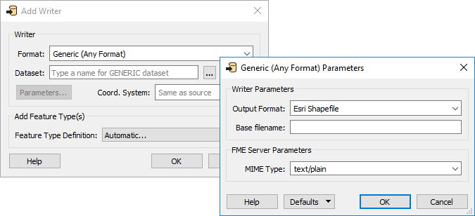
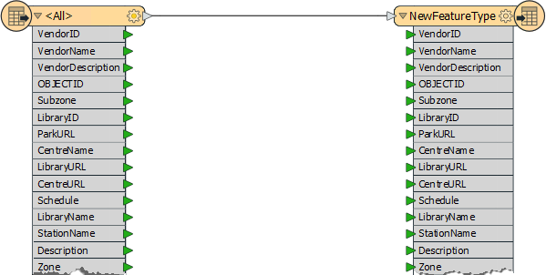
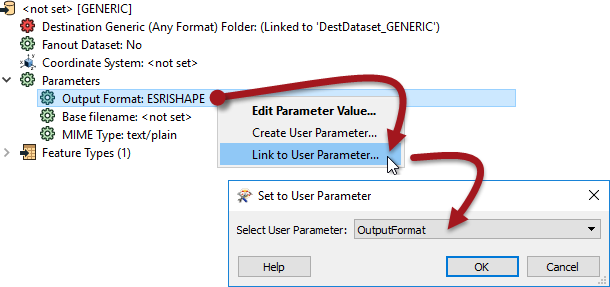

After completing this lesson, you'll be able to:
As the resident FME expert, your customers and co-workers often ask you to translate data (mainly the community map) between formats. You realize that it would be much simpler if you created a workspace to do this - regardless of format - and let the end users translate the data themselves. In the future, this would make an excellent use for an FME Server Data Download service, but for now, we'll let the users run the workspace in FME Workbench. Your task is to create a workspace to translate Community Mapping data to the end user's chosen format and zip it.
Start FME Workbench (2022.1 or later) and begin with an empty canvas. Select Readers > Add Reader from the menu bar and add the following:
| Reader Format | Esri Geodatabase (File Geodb Open API) |
| Reader Dataset | https://s3.amazonaws.com/FMEData/FMEData/Data/CommunityMapping/CommunityMap.gdb.zip or C:\FMEData\Data\CommunityMapping\CommunityMap.gdb |
| Workflow Options | Single Merged Feature Type |
By selecting the single merged feature type option, we will have a workspace that is nice and compact, plus it will allow the user to select which tables they want to read from the source.
Click OK to close the dialog and add the reader.
Select Writers > Add Writer from the menu bar and add a Generic Writer:
| Writer Format | Generic (Any Format) |
| Writer Dataset | None |
| Writer Parameters | Output Format: Esri Shapefile |
| Add Feature Types | Feature Type Definition: Automatic |
You don't have to select an output location, but you must open the Parameters dialog and set an original output format. Select a format like Esri Shapefile.
In the "Add Feature Types" section of the dialog, select Automatic for feature type definitions:

Click OK, and the Feature Type Properties dialog for the new writer will open automatically. Set the Geometry field to fme_any. This setting allows the feature type to accept data of any geometry format:
Click OK to close the dialog and add the new feature type. Connect it to the source feature type. When you make the connection, the attribute schema will automatically be updated to match the connected reader feature type:

Look in the Navigator window at the user parameters that were created automatically with the reader and writer:

The parameter for SourceDataset_FILEGDB is something we won't ever need (this translation will always use the same dataset), so delete it.
Another automatically created parameter is Feature Types to Read. This parameter is helpful because it will prompt the user to select which tables to read from the source Geodatabase, so keep this parameter.
Similarly, keep the Destination Dataset parameter.
The Output Format parameter is interesting. Double-click on it as if you were going to set a value. Notice that the "More Formats..." option in the drop-down list opens up the complete FME formats list:

It wouldn't be fair to the end-user to expose so many formats when they don't need to see or select most of them. It would be better to restrict this list. So, delete this user parameter, and we'll create a new - more restrictive - one.
Add a new User Parameter by right-clicking on User Parameters and selecting Manage User Parameters...
In the dialog that opens, click the Plus button and choose to add a Choice parameter. Configure it as follows:
| Parameter Identifier | OutputFormat |
| Published | Yes (checked) |
| Required | Yes (checked) |
| Prompt | Select Output Format: |
For the Choice Configuration field, click the Import button and choose Writer Formats. Select a handful of the most common spatial formats, such as Esri Shapefile, AutoCAD DWG, GML, and MapInfo TAB, then click OK.
Then click OK until all the dialogs are closed.
Now, in the Navigator window, expand the parameters for the Generic Writer. Locate the Output Format parameter. Right-click it and choose Link to User Parameter.
Select the newly created OutputFormat parameter and click OK:

Now when you run the workspace, the choice of the output format will be among these few:

The final task we can do here is to output the features to their original table. To do this, we need to know where they came from using an FME attribute called fme_feature_type.
Inspect the properties for the writer feature type. Set a fanout by choosing fme_feature_type as the attribute supplying the feature type name.

Save the workspace and then run it with the prompt option set. When prompted, select some source tables to read (include at least the GarbageSchedule plus one other).
Then for Destination Generic (Any Format) Folder, we will create a zipped folder to contain all of our files. Set the location of an output folder (such as C:\FMEData\Output\Training), then at the end, type:
\CommunityMapping.zip
This configuration will create a zipped file called CommunityMapping.
Finally, set Esri Shapefile as the format to write:

Click the Run button to run the translation. Examine the output folder. FME created a zipped folder that contains all the selected tables in Shapefile format:

Now you have a solution that almost anyone can open and run for themselves. Also, if you published the workspace to FME Server, users could run the workspace and have access to the same user parameters and options.